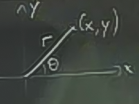

Ders 11
Önceki derste çok değişkenli fonksiyonları min, maks üzerinden inceledik. Bu derste bu tür fonksiyonların herhangi bir yöndeki varyasyonunu nasıl hesaplayacağımızı göreceğiz. Bunu yapabilmek için daha fazla kavramsal araçlara ihtiyacımız var.
Bugünkü konumuz diferansiyeller.
Diferansiyeller
Tek değişkenli Calculus'tan dolaylı (implicit) diferansiyel almayı biliyoruz herhalde. Mesela elimizde
$$ y = f(x) $$
var. Dolaylı türevler ile $x$ üzerindeki sonsuz küçük bir değişimi $y$ üzerindeki sonsuz küçük bir değişime bağlayabiliyoruz.
$$ dy = f'(x) \mathrm{d} x $$
Örnek
$$ y = \sin^{-1} x $$
Bu formülün türevini bulmak için, şöyle bir zincir takip edebiliriz. Üsttekine tersten bakalım
$$ x = \sin y $$
O zaman
$$ dx = \cos y \mathrm{d} y $$
$$ \frac{dy}{dx} = \frac{1}{\cos y} = \frac{1}{\sqrt{1-x^2}} $$
Eşitliğin sağ tarafını nasıl elde ettik? Hatırlayalım
$$ \cos^2 y + \sin^2(y) = 1 $$
$$ \cos y = \sqrt{1 - \sin^2y} $$
$\sin^2(y)$ nedir?
$$ y = \sin^{-1} x $$
$$ \sin y = \sin(\sin^{-1}x) $$
Ters sinüs fonksiyonunun sinüsü alınırsa, geriye sadece $x$ kalır.
$$ \sin y = x $$
O zaman
$$ \cos y = \sqrt{1 - x^2} $$
İşte bu tür $dy,dx$ içeren formülleri kullanacağız, bu derste çok değişkenli ortamda bunu yapacağız.
Tam Diferansiyeller
Eğer $f(x,y,z)$ varsa,
$$ df = f_xdx + f_ydy + f_zdz $$
Diğer notasyonla
$$ df = \frac{\partial f}{\partial x}dx + \frac{\partial f}{\partial y}dy + \frac{\partial f}{\partial z}dz $$
Bu formülün hesapladığı nedir? Elde edilen bir sayı, matris, vektör değildir. Bu değişik türden bir nesne ve bu nesneleri manipüle etmenin, kullanmanın kendine has kuralları var. Onları nasıl kullanacağımızı öğrenmemiz gerekiyor.
Onları nasıl irdelemek gerekir? Bunu cevaplayabilmek için onları nasıl "görmememiz" gerektiğini anlamamız lazım.
Önemli
$df$ ile $\Delta f$ farklı şeylerdir.
Bir kere $\Delta f$ bir sayıdır, onu hesaplamak için $\Delta x, \Delta y, \Delta z$, vs.. gibi sayılar kullaniriz. Kıyasla $df$ bir sayı değildir, onu göstermenin tek yolu diğer diferansiyeller üzerindendir.
Diferansiyelleri, yani $dx, dz$ gibi nesneleri bir "yerine başka şeyler koyabileceğiniz bir tür işaret (placeholder)" gibi düşünülebilir. Onların sonsuz küçüklükteki değişimi temsil ettiği de doğrudur, ama hoca bu tanımı pek sevmiyor. Bu "işaretleyici" nesnelere değişim değerlerini (evet, sayısal olarak, ama yaklaşıksal bağlamda) verirsek, eşitliğin sol tarafında $df$ için bir teğet düzlem yaklaşıksallaması elde edebiliriz.
O zaman diferansiyeller
1) $x,y,z$'deki değişimin $f$'i nasıl etkilediğinin kodlarını / şifrelerini (encode) içerirler. Tam diferansiyel formülü hakkında söyleyebileceğimiz en genel söz budur.
2) Onlar $\Delta x, \Delta y, \Delta z$ gibi varyasyonlar için bir işaret / yer tutucu görevi görürler ve onların sayesinde $\Delta f \approx f_x\Delta x + f_y \Delta y + f_z \Delta z$ yaklaşıksal formülünü elde etmek mümkün olur. $\Delta f$ formülü ile $df$ formülünde birincinin $\approx$ ikincisinin $=$ kullandığına dikkatinizi çekerim.
3) Tam diferansiyel üzerinde yapabileceğimiz bir diğer işlem, tüm formülü herkesin bağlı olduğu bir başka değişkene bölmektir. Diyelim ki $x,y,z$ değişkenlerinin hepsi de $t$ adındaki bir başka değişkene bağlı. O zaman tüm formülü $dt$'ye bölerek $t$ bazındaki değişimin $f$'i nasıl etkilediğini görebilirim, yani $df/dt$'yi hesaplayabilirim. Yani şunu elde ederim,
$$ \frac{df}{dt} = f_x\frac{dx}{dt} + f_y\frac{dy}{dt} + f_z\frac{dz}{dt} $$
ki bu $x=x(t),y=y(t),z=z(t)$ ise olabilir. Böylece $f$'in değişim oranını (rate of change) elde ederim.
Bu arada üstteki formül Zincirleme Kanunu (Chain Rule) olarak ta bilinir, çünkü $x,y,z$ değişkenleri $t$'ye bağlı, ve üstteki formülle "zincirleme olarak" $f$'den $x,y,z$, oradan $t$'ye gidiyoruz, ve değişim oranı hesabını elde ediyoruz.
Üstteki 2. ifade niye geçerlidir? Matematiksel olarak onu nasıl hesaplayabilirim?
1'inci Deneme
$$ df = f_xdx + f_ydy + f_zdz $$
ile başlarız. Eğer $x=x(t)$ ise, o zaman
$$ dx = x'(t)dt $$
ifadesi de doğrudur. Aynı şekilde
$$ dy = y'(t)dt $$
$$ dz = z'(t)dt $$
Bunları ana formülde yerine koyarsak
$$ df = f_xx'(t)dx + f_yy'(t)dy + f_zz'(t)dz $$
olur. Tüm formülü $dt$'ye bölersem, Zincirleme Kanununu elde ederim.
Bu işliyor, fakat diyelim ki çok şüphecisiniz, ve diferansiyel kavramına hala inanmıyorsunuz. Bu ispatta mesela $dx = x'(t)dt$ gibi yine diferansiyel alma işlemini kullandım. Aslında Zincirleme Kanunu böyle ispatlanmıyor.
2'inci Deneme
Şimdiye kadar güvendiğimiz kavramlardan biri yaklaşıksallama formülümüz. Ona güveniyoruz. O da diyor ki
$$ \Delta f \approx f_x\Delta x + f_y \Delta y + f_z \Delta z $$
Her şeyi $\Delta t$ ile bölelim.
$$ \frac{\Delta f}{\Delta t} \approx \frac{f_x\Delta x + f_y \Delta y + f_z \Delta z }{\Delta t}$$
Burada sayılar kullanıyorum, $\Delta ..$ ile ifade edilenler sayıdır. Bir "diferansiyele" bölmek ne demektir bilmiyoruz, ama bir sayıyla bölmenin ne demek olduğunu iyi biliyoruz.
Şunu da biliyoruz - eğer $\Delta t \to 0$ ise
$$ \frac{\Delta f}{\Delta t} \to \frac{df}{dt} \qquad (1) $$
Türevlerin tanımı matematiksel olarak budur. Bu durum tüm değişkenler için de geçerlidir. Mesela
$$ \frac{\Delta x}{\Delta t} \to \frac{dx}{dt} $$
O zaman bölümün tamamı, $\Delta t \to 0$ iken alttaki gibi olur, yaklaşıksallık $\Delta t$ sıfıra doğru yaklaşıkça eşitliğe dönüşür.
$$ \frac{df}{dt} = f_x\frac{dx}{dt} + f_y\frac{dy}{dt} + f_z\frac{dz}{dt} $$
Örnek
$$ w = x^2y + z $$
$$ x = t $$
$$ y = e^t $$
$$ z = \sin t $$
$$ \frac{dw}{dt} = 2xy \frac{dx}{dt} + x^2 \frac{dy}{dt} + 1 \frac{dz}{dt}$$
$$ = 2te^t 1 + t^2e^t+\cos t $$
$$ = 2te^t + t^2e^t+\cos t $$
Bu sonuca başka türlü nasıl erişebilirdik?
Ana formül $w$ içine tüm değişkenlerin $t$ bazında karşılıkarını geçirelim
$$ w(t) = t^2e^t + \sin t $$
O zaman
$$ \frac{dw}{dt} = 2te^t + t^2e^t + \cos t $$
Uygulama
Calculus'taki Türevlerde Çarpım (Product Rule) ve Bölüm Kanunlarını (Quotient Rule) doğrula.
$$ f = uv $$
$$ u=u(t) $$
$$ v=v(t) $$
Tam Diferansiyeli uygulayalım
$$ \frac{d(uv)}{dt} = f_u\frac{du}{dt} + f_v \frac{dv}{dt}$$
$$ = v\frac{du}{dt} + u \frac{dv}{dt}$$
Böylece Çarpım Kanununu aynen elde etmiş olduk.
Bölüm Kanunu için
$$ g = \frac{u}{v} $$
$$ u=u(t) $$
$$ v=v(t) $$
$$ \frac{d(u/v)}{dt} = \frac{1}{v} \frac{du}{dt} + \frac{-u}{v^2}\frac{dv}{dt}$$
Tekrar düzenlersek
$$ = \frac{u'v - v'u}{v^2} $$
Bölüm Kanununu elde ettik.
Şimdi biraz daha çılgınca bir şey yapalım. İddia ediyorum ki daha fazla değişken için Zincirleme Kanununu kullanabilirim.
$$ w = f(x,y), \ x = x(u,v), \ y = y(u,v) $$
Bu değişken isimleri belki acaip, anlamsız geliyor, ama daha somut bir örnek olarak şunu düşünelim. Mesela kutupsal kordinat sistemine gidip gelmem gerekiyor ve $x,y$'nin bağımlı olduğu değişkenler $r$ ve $\theta$. Belki de türevlerin kutupsal forma nasıl yansıdığına görmek istiyorum, gibi..
Devam edelim. Türev almak için bir yöntem, $x,y$'yi yerlerine koymak ve
$$ w = f(x(u,v),y(u,v)) $$
hesabı yapmak. Böylece $w$ formülü $u,v$ bazında bir formül haline gelir. Sonra kısmi türevleri alırım, vs. Ama bu çok çetrefil bir işlem olabilir. Alternatif?
$\partial w/\partial u$, $\partial w/\partial v$ kısmi türevlerini $\partial w/\partial x$ ve $\partial w/\partial y$ bazında göster.
Ayrıca $x_u, x_w, y_u, y_v$'yi göster.
$$ dw = f_xdx + f_y dy$$
Biz $dx$ ve $dy$'den kurtulmak istiyoruz çünkü cevap istediğimiz sorulardan biri "$u,v$ biraz değişince $w$ ne kadar değişir" şeklindeki sorular. Devam edelim
$$ = f_x \bigg( x_u du + x_y dv \bigg) + f_y \bigg( y_u du + y_v dv \bigg) $$
Yani $dx$ ve $dy$'yi, tekrar tam diferansiyel kuralını kullanarak açtım.
$$ = \bigg(f_x x_u + f_yy_u \bigg)du + \bigg(f_xx_u + f_yy_v \bigg) dv $$
Bu formülde kısmi türevler şöyle gösterilebilir
$$ = \underbrace{(f_x x_u + f_yy_u )}_{\partial f/\partial u}du + \underbrace{(f_xx_u + f_yy_v)}_{\partial f/\partial v}dv $$
Yani
$$ \frac{\partial f}{\partial u} = \frac{\partial f}{\partial x}\frac{\partial x}{\partial u} + \frac{\partial f}{\partial y}\frac{\partial y}{\partial u} $$
$$ \frac{\partial f}{\partial v} = \frac{\partial f}{\partial x}\frac{\partial x}{\partial v} + \frac{\partial f}{\partial y}\frac{\partial y}{\partial v} $$
Üstteki sonuca vardık çünkü, mesela $\partial f/\partial u$'nun olması gereken yer belli, hemen $du$'dan önce gelmeli.
Not: Üstteki iki formülde, mesela birincisinde, insanın içinden hem bölüm, hem bölende olan $\partial x$ ve $\partial y$'leri iptal etmek gelebilir. Ama bunu yaparsak
$$ \frac{\partial f}{\partial u} = \frac{\partial f}{\partial u} + \frac{\partial f}{\partial u} $$
gibi bir formül çıkardı, ki bu formül doğru olmazdı. Çünkü bu tür bir iptal operasyonu yanlıştır, bunlar kısmi türevler, tam türevler (total derivatıves) değil. Zaten $d$ yerine kıvrık d, yani $\partial$ sembolü kullanmamızın sebebi de bu -- bize hatırlatıcı olmaları için. $d$'ler ile yapabileceğimiz bazı basitleştirme işlemlerini $\partial$'lar ile yapamadığımızı hatırlamak amacıyla değişik semboller kullanıyoruz.
Örnek
Kutupsal kordinatlarımız varsa, değişim formülü şöyledir
$$ x = r \cos \theta $$
$$ y = r \sin \theta $$

Ve elimizde bir $f=f(x,y)$ var ise, üstteki $x,y$ formüllerini yerine koyup $f$ formülünü $r,\theta$ bazında elde edebiliriz.
Sonra şu hesabı yaparız
$$ \frac{\partial f}{\partial r} = \frac{\partial f}{\partial x} \frac{\partial x}{\partial r} + \frac{\partial f}{\partial y} \frac{\partial y}{\partial r} $$
$$ = f_x\cos \theta + f_y \sin \theta $$
Bu tür numaralar sonraki derste faydalı olacak. Mesela gradyan vektörü kısmi türevlerden oluşan bir vektördür.
$$ \nabla f = < f_x,f_y,f_x > $$
Yani aslında bir diferansiyeli kısmi türevleri bir paket halinde bir araya getirip size sunan bir şey olarak görebilirsiniz. Gradyan vektör de bu paketlemeyi değişik bir şekilde yapan bir diğer nesnedir.
Ekler
Üstteki fikirlerden hareketle ve [1, sf. 499]'u baz alarak bir ek, farklı anlatım şöyle olabilir; Bir $f(x(t),y(t))$ fonksiyonunun zamana göre türevini nasıl alırız? Formülden önce zihinde canlandıralım, diyelim ki $t$ değişkeni $\Delta t$ kadar değişiyor, bu değişim her ikisi de $t$'ye bağlı olduğu için $x,y$'yi etkileyecektir. Bu $f$ üzerinde bir domino etkisi yaratır çünkü $f$ fonksiyonu da $x,y$'ye bağlıdır. $f,x,y$ degisimlerini $\Delta f$, $\Delta x$, $\Delta y$ ile gosterirsek, ve geriye dogru degisimleri takip edersek,
$$ \Delta f \approx \frac{\partial f}{\partial x} \Delta x + \frac{\partial f}{\partial y} \Delta y, \qquad \Delta x \approx \frac{\mathrm{d} x}{\mathrm{d} t} \Delta t, \quad \Delta y \approx \frac{\mathrm{d} y}{\mathrm{d} t} \Delta t $$
Sagdaki iki formulu soldakine sokunca $\Delta f$'yi $\Delta t$'ye baglayan bir formul elde ediyoruz,
$$ \Delta f \approx \frac{\partial f}{\partial x} \frac{\mathrm{d} x}{\mathrm{d} t} \Delta t + \frac{\partial f}{\partial y} \frac{\mathrm{d} y}{\mathrm{d} t} \Delta t $$
Her iki tarafı $\Delta t$ ile bölelim,
$$ \frac{\Delta f}{\Delta t} \approx \frac{\partial f}{\partial x} \frac{\mathrm{d} x}{\mathrm{d} t} + \frac{\partial f}{\partial y} \frac{\mathrm{d} y}{\mathrm{d} t} $$
Eger $\Delta t \to 0$ ise (1)'den biliyoruz ki
$$ \frac{\mathrm{d} f}{\mathrm{d} t} = \frac{\partial f}{\partial x} \frac{\mathrm{d} x}{\mathrm{d} t} + \frac{\partial f}{\partial y} \frac{\mathrm{d} y}{\mathrm{d} t} $$
Kaynaklar
[1] Strang, Calculus
Yukarı